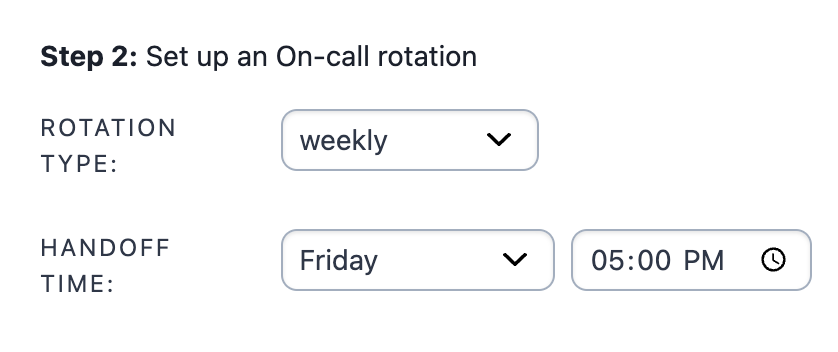
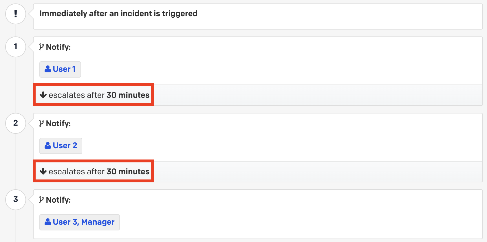
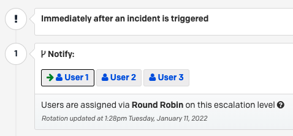

危机领导
有效的危机管理需要领导力。危机领导强调企业领导者如何将组织价值观应用于危机的所有阶段。
为什么危机领导对您的组织重要#
每一次危机都蕴含着危险与机遇。在公司历史的关键时刻，正确的领导至关重要。正确的危机领导是价值观驱动的，并在谨慎、深思熟虑地回应问题与基于应对效果有意吸引关注或获取新业务之间保持平衡。
当公司的价值观置于首位时，您的利益相关者沟通和公开声明保持一致。您的受众总能察觉到您是否在倒退或随大流。通过保持一致，您避免了加剧局势。没有两次危机是相同的，正如没有两个组织是相同的。危机领导的核心在于您——而不是其他人——向您的利益相关者讲述您的组织从一次危机到下一次危机的故事。
危机领导的考虑因素#
危机不可预测且变化多端的性质需要情境意识。了解您知道什么和不知道什么是至关重要的。持续监控局势，预测状态，并准备好适应变化的环境，使您的公司在危机应对中变得熟练，并为您的团队提供目标，即每个人都在同步并朝着相同的目标努力。
危机领导的一个越来越重要的方面是照顾好自己和团队。您的危机应对团队成员可能受到事件影响，但仍在努力解决。您的团队中有些人可能已经连续工作了24小时，需要有人允许他们暂时离开。疲劳可能正在累积等等。利用PagerDuty平台内置的功能来建立值班轮换、交接，并整合Zoom或Teams等视频会议技术，可以帮助在应对可能持续的局势时为您的团队创造一个安全健康值班文化。

领导危机时的注意事项#
成功和不成功的公司危机应对案例随处可见。事实上，很有可能在你阅读本指南时，新闻中就有一个成功和一个不成功的案例。重要的是从他人的公开错误中学习，并以注意事项列表的形式制定您的核心原则。其中一些可能是显而易见的，但仍然值得记录。以下是一些常见的例子：
-
应做准备一组通用的暂定声明，可以轻松定制以适应特定情况（例如，供应商破产、网络事件、产品召回、高层离职等）
-
应做谨慎考虑何时以及如何回应，因为总是存在新闻可能在您评论之前就曝光的风险
-
应做在回应中保持克制，避免试图对每一个负面帖子、询问或攻击做出回应
-
不应假设同时发生的多个危机或事件是相关的
-
不应复制粘贴——即采取仅基于您组织价值观、历史和风险概况的独特行动，并在您的能力范围内，否则您将面临更大的暴露风险
-
不应假设主动发布非义务性公开声明没有重大风险——您需要在此方面与法律团队仔细权衡您的决定
-
不应假设您在内部或对部分客户或投资者所说的话不会公开
危机情景规划#
危机领导者应始终在危机成为现实之前为公司的最坏日子做好准备。如果2020年的大流行是您的第一次生存危机，墨菲定律说它不会是最后一次。在您在组织中的任期内，很可能会经历多次危机。参考公司历史上的危机是规划的一部分。然而，情景规划是前瞻性的，专注于对组织最可能和最具破坏性的危机情景，以主动发展团队、计划和剧本。有无数的情景可供选择，但以下是一些例子：
- 关键基础设施攻击（例如，电力、水、交通）
- 网络事件（例如，勒索软件、数据泄露）
- 大流行（例如，传染病）
- 环境灾难（例如，地震、飓风、干旱）
- 人力资源危机（例如，工会罢工、抗议、劳动力短缺）
- 地缘政治灾难（例如，战争、政变）
- 恐怖主义（例如，政治暴力、破坏）
- 经济灾难（例如，股市崩盘、货币危机）
- 工业事故（例如，气体泄漏、建筑物倒塌）
如果时间无限且世界静止，您可以为世界上所有的情景做准备。然而，目标是选择您列表中的一小部分情景，并建立可转移的原则和技能，为更广泛的危机做好准备。另一种方法是关注情景之间的后果，并通过添加控制措施（如剧本、运行手册或预定义的战术响应团队）来解决这些能力差距。您还可能发现，随着运营环境的变化，关键性顺序也会变化，因此定期审查您的顶级情景及其相关计划和团队是重要的。
组建执行危机领导团队#
在考虑危机应对团队的规模、范围和角色时，制定一个执行危机领导团队是一个良好的起点。这个团队将包括来自组织各个领域的功能业务负责人，从沟通到法律、人力资源等等。考虑从以下一些或所有功能角色开始：
- 首席执行官
- 首席法律官
- 首席沟通官
- 首席财务官
- 首席信息安全官
- 首席人力资源官
- 首席运营官
- 首席信息官
- 首席韧性官
- 首席收入官
- 首席营销官
- 首席安全官
没有一种尺寸适合所有情况，您可能不需要执行危机领导团队中的所有这些角色。同样重要的是考虑您的董事会——如果有的话——作为执行危机领导团队的延伸。同样，外部资源如公共关系/危机管理公司、灾难恢复服务、保险公司、数字取证专家或地方/联邦当局不应被忽视，应作为重要联系人记录。
危机团队领导者#
在危机中，重要的是要有一个面孔和一个单一的声音。危机团队领导者是负责领导组织度过危机的个人，基于其专业领域的整体责任。他们类似于危机情况下的事件指挥官。然而，在复杂情况下，危机团队领导者可能更像是一个区域指挥官，如果有多个事件指挥官需要监督。
一旦您构建了您的一小部分情景，下一步是分配组织成员作为团队领导者及其备份。以下是一个示例表格：
| 危机情景 | 情景示例 | 危机团队领导者 | 潜在备份 |
|---|---|---|---|
| 关键基础设施攻击 | 能源电网、供水、电信 | 首席运营官 | 物流主管 |
| 环境灾难 | 地震、飓风、火山 | 首席韧性官 | 安全主管 |
| 人力资源危机 | 劳工罢工、抗议、劳工违规 | 首席人力资源官 | 运营主管 |
| 营销活动失败 | 打字错误、不实产品声明、错误语气 | 首席数字官 | 沟通主管 |
使用PagerDuty，您可以在平台内构建您的值班计划，提供关于谁在值班以及业务领域在危机情况下发生时的可见性和问责制。您还可以使用升级策略添加备份，在自定义时间延迟后通知下一个人。

如果您想平衡值班团队的负载，循环调度可以帮助通过轮流通知谁是每个危机通知的主要团队成员。

继任计划#
在审视您的执行危机领导团队、危机团队领导者和他们的备份时，您应该从继任计划或故障转移映射的角度来看待它。根据您组织的组成和地理集中度，您可能希望进一步多样化您的成员以分散风险。如果每个人都位于相近的位置，对该地区的影响将导致失败和延长的平均修复时间（MTTR）。您希望您的PagerDuty轮换和/或升级策略反映这一战略。